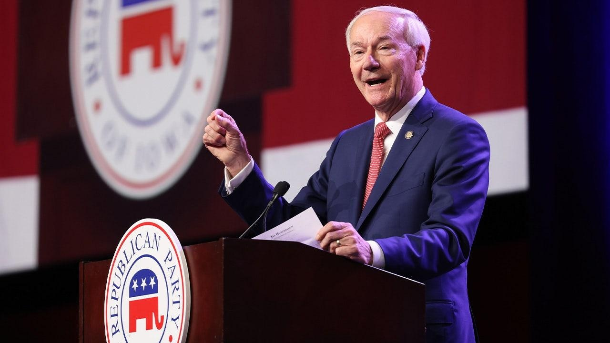

White House apologizes to Asa Hutchinson for DNC joke about end of his campaignPresident Biden's administration reached out to former Arkansas Gov. Asa Hutchinson to apologize for a joke made by the Democratic National Committee (DNC) about the end of his presidential campaign. Hutchinson's decision to suspend his campaign drew mockery from the Democratic Party, who joked that they did not know he was still in the race. "This news comes as a shock to those of us who could’ve sworn he had already dropped out," DNC press secretary Sarafina Chitika posted. Biden reportedly requested an apology be given to the former governor on behalf of the administration. White House press secretary Karine Jean-Pierre said Wednesday that White House Chief of Staff Jeff Zients called Hutchinson "to apologize on behalf of the president." She continued, "President Biden has deep respect for Gov. Hutchinson and admires the race that he ran." "The call from the White House was not necessary but still appreciated," Hutchinson said. "We can disagree without demonizing." Hutchinson on Tuesday suspended his long-shot campaign for the 2024 Republican presidential nomination after finishing sixth in the Iowa caucuses. "I am suspending my campaign for President and driving back to Arkansas. My message of being a principled Republican with experience and telling the truth about the current front runner did not sell in Iowa," Hutchinson said in his announcement. He emphasized, "I stand by the campaign I ran. I answered every question, sounded the warning to the GOP about the risks in 2024 and presented hope for our country’s future." According to the unofficial tabulation, Hutchinson won less than 200 votes out of more than 110,000 cast in Iowa's Republican presidential caucuses. Fox News Digital's Paul Steinhauser contributed to this report. |
 |